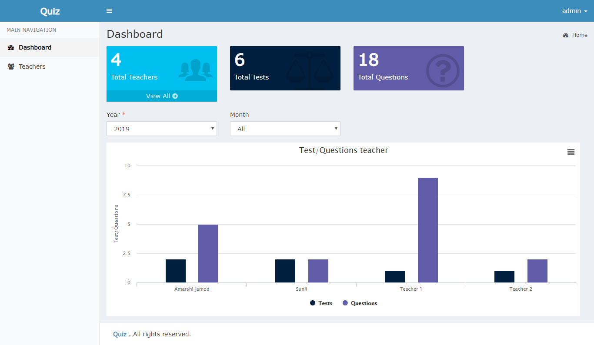

PHP Quiz System might be an incredible PHP script that gives a safe client the executives framework. the machine might be a decent method to make your site, allowing your clients to enroll Associate in Nursing record and construct limited access to bound clients. we give pleasant help and it's frightfully clear to put in. It's jumped up by MYSQL and PHP
TheSoftScript PHP Quiz panel is a quiz management Script with a backend Admin Panel. The content can without much of a stretch be converged into a current site. The model pages and contents (login, enlistment, overlooked secret word, and so forth.) incorporated into the content can be modified to be utilized in your very own site or can fit perfectly in to your current site.

Click http://quiz.spangleworld.com for demo.